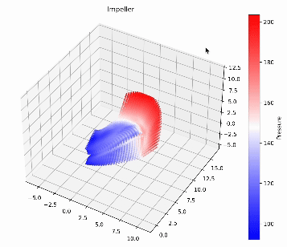

Impeller Mechanics with Physics-Informed NN's

- Physics-Informed Neural Networks (PINNs) learns the rotational frame Navier Stokes equation in three dimensions
- A PyTorch based transformer neural network trained on Lambda Labs NVIDIA H100 Tensor Core clusters
- CFD data generated by sampling design variable parameters via latin hypercube sampling
- Sample data fed to automated meshing script which feeds to automated custom OpenFOAM CFD C++ solver for full "real" flow fields
- Data is used for unsupervised continuous learning of entire non-linear flow fields in the 3D domain for any impeller design
- Usecases:
- A fast surrogate to replace CFD in the loop of an evolutionary optimisation algorithm, allowing fast, dynamic and adaptable design procedures
- A model that can be used as a "digital twin", where live data is fed to a model and predicts physical behaviour before unforeseen circumstances
Technical Analysis with Deep LSTM RNN's
- Developed a Multi-layered, Multi-dimensional LSTM Recurrent Neural Network model to predict stock prices and volume
- Integrated multiple technical indicators such as Moving Averages, RSI, and MACD as input features for enhanced predictive accuracy, regularised data using appropriate transformations
- A PyTorch based unrolled RNN neural network trained on Lambda Labs NVIDIA H100 Tensor Core clusters
Non-Linear Rocket Guidance Control System
- Developed an airbrake mechanism that extends flaps to slow a rocket down to desired apogee.
- Utilized KiCad for comprehensive circuit design of a flight computer, including schematics and PCB layout. Combining different components and sensors (IMU, Baro, GPS, Radio)
- Programmed the flight computer and GNC in C and C++, designed a state of the art Extended Statistical Kalman Filter for precise state estimation, using quaternion mathematics for orientation and position calculations.
- Implemented PID control by building lookup tables of drag coefficients using OpenFOAM CFD automations in C++, which are called by the rocket control system during flight.
- Calculated the predicted apogee in real-time using an efficient Runge-Kutta numerical algorithm, enabling the solution of a non-linear ODE that accounts for rocket drag.
Tomas Whiteley
MEng Mechanical Engineering
University of California, Santa BarbaraUniversity College London
github | linkedin